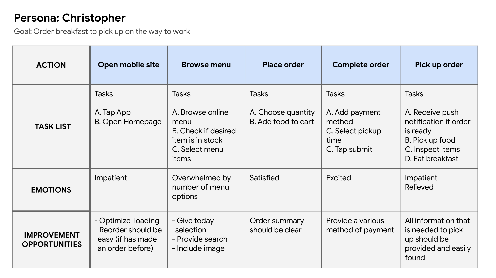
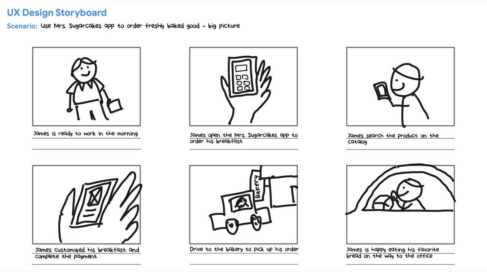
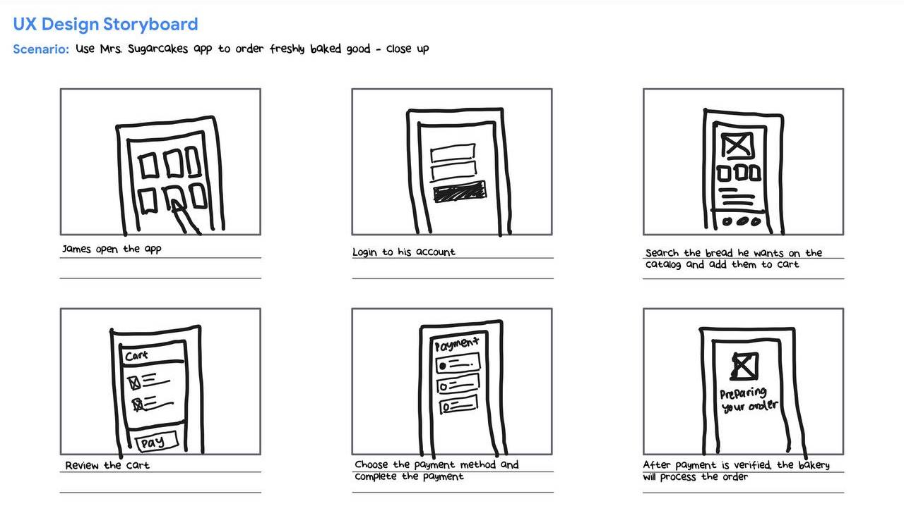
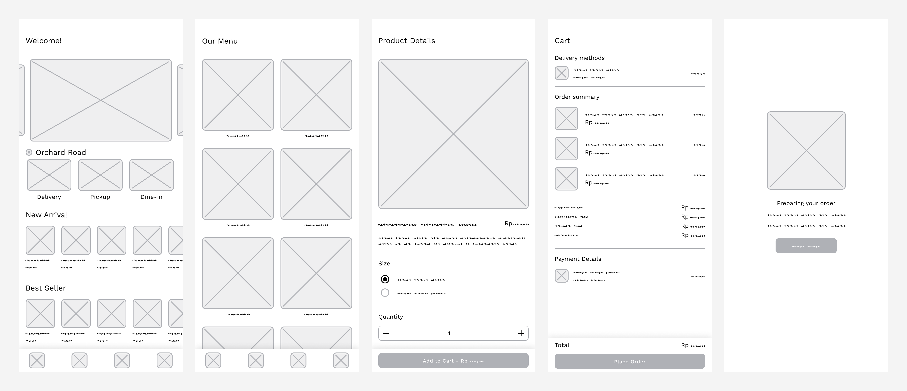

Mrs. Sugarcakes
Disclaimer: This is a fictional project under the Google UX Design Certificate course.
Timeline
Jul - Aug 2023

Project Overview
The Product
Mrs. Sugarcakes aims to simplify order management with an app, adapting to pandemic challenges and customer preferences. The app addresses reduced dine-in visits and product availability issues, enhancing the overall experience.
The Problem
Mrs. Sugarcakes Patisserie faces reduced dine-in traffic due to the pandemic and struggles with frequent product unavailability, impacting customer satisfaction. A solution is needed to streamline orders, improve stock visibility, and provide a remote ordering option for enhanced customer experience.
The Goals
The project aims to create an efficient ordering app for Mrs. Sugarcakes Patisserie, alleviating pandemic-induced challenges like decreased dine-in customers and product shortages. Key goals include enhancing customer experience with remote ordering, real-time stock updates, operational efficiency, and data-driven customer engagement.
My role and responsibilities
- User research
- Wireframes
- Lo-Fi Prototype
- Usability Studies
- Hi-Fi Prototype
Foundational research
Summary
I conducted interviews and crafted empathy maps to comprehend the users I'm designing for and their requirements. Through research, a key user segment identified was working professionals who regularly purchase patisserie items at least thrice a week. This group affirmed initial assumptions about Mrs. Sugarcakes' customer base. However, the research also unveiled that time wasn't the sole constraint; users faced the recurring issue of their favored products frequently being unavailable due to stock limitations.
Pain Points
Product Unavailability Frustation
Customers often experience disappointment when they arrive at the patisserie only to find their desired products out of stock, leading to frustration and dissatisfaction.
Time-Consuming Ordering Process
The traditional ordering method might involve waiting in line or making phone calls, which can be time-consuming, especially for busy working professionals seeking quick purchases.
Missed Special Promotion
Without a digital platform, customers might miss out on promotions, new product launches, and exclusive deals that they would have been unaware of due to lack of information.
Limited Convenience
Customers may find it inconvenient to physically visit the patisserie every time they want to enjoy their favorite pastries, especially when they have a tight schedule
Persona
In the next step, I recognized the most common themes in the user foundational research data and grouped the users who personify those themes under a specific persona - a fictional user whose goals and characteristics represent the needs of a group of users.
User Story
I developed a user journey map to pinpoint potential pain points and emotions that customers could experience when using the conventional ordering method. Additionally, I outlined solutions to address the challenges that my app seeks to overcome.
Storyboards
Big Picture Storyboards
Close Up Storyboards
Paper Wireframes
Devoting time to sketching various versions of each app screen on paper guaranteed that the elements transferred to digital wireframes effectively targeted user pain points.
Digital Wireframes
During the initial design phase, I ensured that screen designs were continuously refined based on extensive feedback and insights from user research.
Low-fidelity prototype
The low-fidelity prototype established a connection with the core user flow of constructing and ordering patisserie, enabling its utilization in a usability study involving users.
Usability Study: Findings
I undertook two rounds of usability studies. The initial study findings informed the progression from wireframes to mockups. Subsequently, the second study employed a high-fidelity prototype, highlighting areas in the mockups that required further refinement.
First design iterations
- “Add to favorites” button to product details
- Add more payment methods
Second design iterations
- Simplify the delivery option flow
- Use simple icon for better accessibility
Mockups
Following the usability studies, I incorporated an "Add to Favorites" button to expedite the checkout process.
The outcomes of the second usability study prompted a modification in the delivery option section in the cart, allowing changes only prior to adding items to the cart. Once on the cart page, the delivery option remains fixed to avoid potential errors in cases where items might be out of stock.
The outcomes of the second usability study prompted a modification in the delivery option section in the cart, allowing changes only prior to adding items to the cart. Once on the cart page, the delivery option remains fixed to avoid potential errors in cases where items might be out of stock.
High-fidelity prototype
The high-fidelity prototype showcased streamlined user pathways for ordering patisserie items and completing the checkout process, effectively addressing user preferences for pickup or delivery choices and enhanced personalization.
Accessibility consideration
- Utilize simple icons to ensure easy navigation and understanding for users.
- Include alt text for imagesto facilitate accessibilityfor visually impaired users.
- Provide multi-language support to ensure the app's usability for a diverse user demographic.
Key Takeaways & Next Step
Impact
The app's significantly improved customer convenience amidst the challenges posed by the pandemic.
What I learned
I successfully address the challenges for Mrs. Sugarcakes issues, while I gained valuable insights into user preferences and the significance of providing convenient solutions in the modern business landscape.
Next Step
- Perform an additional set of usability studies to confirm the effectiveness of the solutions in alleviating the pain points identified by the users.
- Engage in further user research to identify potential novel areas of requirement.
- Continuously monitor app usage and performance metrics, including user traffic, engagement levels, and conversion rates.